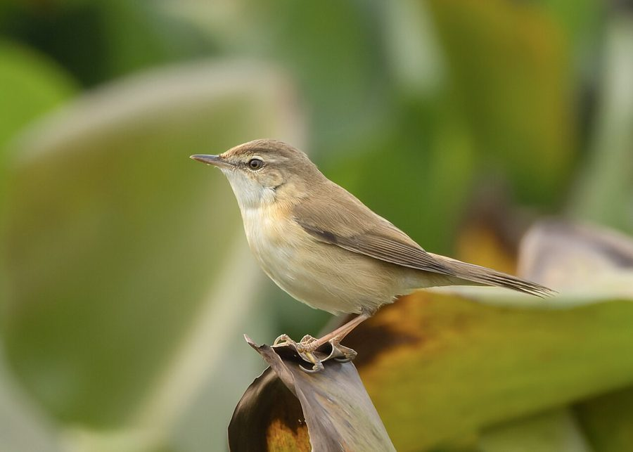

ब्लाइथ रीड वार्बलरBlyth's Reed Warbler
Acrocephalus dumetorum · Acrocephalidae · BRD-0131

- Scientific nameवैज्ञानिक नाम
- Acrocephalus dumetorum (Blyth, 1849)
- Familyकुल
- Acrocephalidae
- Hindiहिंदी
- ब्लाइथ रीड वार्बलर
- Local namesस्थानीय नाम
- blyths reed warbler, blyth reed warbler, blaith warbler, reed warbler, warbler
- Status hereयहाँ की स्थिति
- native
- Movementआवागमन
- Winter visitor
- IUCNIUCN
- LC
- Reviewसमीक्षा
- audited and independently read
When to look कब देखें
Winter visitorशीतकालीन प्रवासी. Expected mainly in September, October, November, December, January, February, March.मुख्यतः सितंबर, अक्टूबर, नवंबर, दिसंबर, जनवरी, फ़रवरी, मार्च में अपेक्षित।
Arrives in September–October from breeding grounds in Central Asia and southern Russia; departs by March. Expected in reed beds and reed margins. All migrants and visitors →
Uses and possibilities उपयोग और संभावनाएँ
Guide: Where the winter birds are: Bakhira, Parvati Arga and the Ayodhya jheels
Drawn from the documented uses in the profile below, where each is labelled traditional, current or a research lead. All uses →
ब्लाइथ रीड वार्बलर / Blyth's Reed Warbler
Acrocephalus dumetorum (Blyth, 1849) — Acrocephalidae
ब्लाइथ रीड वार्बलर — यह एक छोटी, भूरी गायन चिड़िया है जो मध्य एशिया से सर्दियों में भारत आती है। ये रीड़ों में छिपती रहती हैं और अपनी मधुर आवाज़ से गायन करती हैं। सर्दियों में गायन कम होता है, पर उड़ान में "जिर-जिर-जिर" की आवाज़ देती है। अन्य छोटी भूरी चिड़ियों से अलग करना कठिन है, पर गायन से पहचानी जा सकती है।
Quick Identification त्वरित पहचान
| Feature | Description |
|---|---|
| Size | Small warbler; 13–14 cm long |
| Plumage | Brown or warm buff-brown; uniform coloration |
| Upperparts | Warm brown; crown slightly darker |
| Underparts | Buff-white or pale cream; undertail coverts buff |
| Bill | Straight, thin, pointed; dark tip and pale base |
| Tail | Brown, notched tail; not as long-tailed as some warblers |
| Behaviour | Skulking; stays in reed beds; often sings from reeds |
| Vocalisations | Distinctive warbling song; "jir-jir-jir" flight calls |
Field tip: A small brown warbler in reed beds, with a distinctive warbling song (in breeding season) or sharp "jir-jir-jir" flight calls — is likely Blyth's Reed Warbler. Very similar to other reed warblers; song is the best identification feature. Stays in dense reed cover, often hard to see well.
हिंदी — कैसे पहचानें:
छोटी भूरी चिड़िया; रीड़ों में रहती है।
सुंदर गायन करती है।
उड़ते समय "जिर-जिर-जिर" की आवाज़।
गायन से पहचानना सबसे अच्छा है।
Morphology आकारिकी
Biometrics:
| Measurement | Range |
|---|---|
| Total length | 130–140 mm |
| Wing (flattened chord) | 62–73 mm |
| Tail | 55–65 mm |
| Bill | 13–16 mm |
| Tarsus | 19–22 mm |
| Weight | 11–17 g |
Size: 13–14 cm long; wingspan 18–24 cm. Weight 11–17 g. A small warbler.
Plumage: Entire plumage warm brown or buff-brown. Crown slightly darker brown than back. Back and rump warm brown. Wings darker brown with no contrasting patches. Tail brown, notched at the tip (diagnostic of Acrocephalus genus). Underparts buff-white or cream, with buff-brown wash on flanks and undertail coverts.
Legs and feet: Thin, pale brown or flesh-coloured.
Bill: Thin, pointed, dark with pale base — typical warbler bill for gleaning insects.
Eyes: Dark iris; alert.
Sexes: No obvious sexual dimorphism; females slightly smaller.
Vocalisations. Call repertoire:
- Song: Rich, continuous warbling song with repeated phrases and trills. Heard mainly during breeding season and early spring migration.
- Flight call: Sharp, distinctive jir-jir-jir or zit-zit-zit, given in flight or when flushed.
- Contact calls: Soft chirps between birds.
हिंदी: सुंदर गायन करता है। उड़ते समय "जिर-जिर" की आवाज़। सर्दी में कम गाता है।
Behaviour & Ecology व्यवहार और पारिस्थितिकी
Reed-dwelling gleaner: Blyth's Reed Warblers are entirely dependent on reed beds and tall wetland vegetation. They cling to reed stems and leaves, gleaning insects methodically.
Feeding: Entirely insectivorous:
- Small insects and insect larvae gleaned from reed stems and leaves
- Tiny invertebrates picked from reeds
- Occasionally tiny berries
Feeding behaviour: Active gleaner, constantly moving through reed stems, picking insects. Often hops vertically up reed stems. Search mode: thorough examination of each reed stem.
Skulking behaviour: Extremely skulking; stays deep in reed beds. Often heard but difficult to see well. Cryptic coloration aids concealment.
Territorial: Establish individual wintering territories within reed beds. Males sing from elevated reed perches, especially at dawn and dusk in early spring.
Alert behaviour: Wary; give sharp flight calls when flushed from reeds.
Flight: Direct flight on whirring wings. Distinctive flight calls help identification.
हिंदी: रीड़ों में छिपा रहता है। रीड़ों की पूरी लंबाई पर चढ़ता है। कीड़े को धीरे से चुनता है।
Life Cycle / Phenology जीवन चक्र
Winter visitor: Arrives in eastern UP from September, with main arrival October. Departs February–March, with most birds gone by March.
Breeding range: Central Asia, southern Russia, and adjacent regions, from Kazakhstan to western Siberia. Breeds April–August in extensive reed beds.
Migration: Long-distance migrant. Nocturnal migrant, detected by flight calls.
Wintering: Solitary on individual reed beds. Return to same wintering territories year after year.
Moult: Complete moult occurs before arrival; breeding plumage acquired on wintering grounds.
Timing in UP: Early arrival September (vanguard); main arrival October; peak November–February; departure February–March.
हिंदी: सितंबर में आना शुरू करते हैं, मार्च तक चले जाते हैं। रीड़ों पर सर्दी काटते हैं।
Host Plants or Prey आहार
| Food Type | Examples | Capture Method |
|---|---|---|
| Small insect larvae | Reed-inhabiting chironomids, small Lepidoptera larvae | Gleaning from reed stems |
| Tiny invertebrates | Small spiders, tiny beetles, aphids | Gleaning from reed surfaces |
| Insect eggs and pupae | Deposits on reeds | Gleaning from reed surfaces |
| Occasionally small berries | Remaining winter berries | Gleaning from vegetation |
हिंदी: बहुत छोटे कीड़े खाता है। रीड़ों की सूक्ष्मता से परीक्षा करता है।
Predators / Natural Enemies शत्रु
- Avian predators: Shikra, Merlin, Indian Eagle-Owl, Crow
- Mammalian predators: Mongoose, rat, weasel, cat
- Nest predators: Crows, weasels, rats, snakes
हिंदी: शिकारी चिड़ियाँ इसका शिकार करती हैं।
Agricultural / Human Relevance कृषि प्रासंगिकता
Protected status: Listed under Schedule IV of the Wildlife (Protection) Act, 1972 (amended 2022). Hunting is illegal in India.
Ecological value: Important insectivore in reed beds; helps control aquatic insects including disease vectors.
Wetland health indicator: Presence indicates productive reed beds with good insect fauna.
Cultural significance: Known as "gana chiriya" (singing bird) in Hindi. Valued for its song.
Reed bed ecology: Highly dependent on reed bed health; indicator species of reed bed condition.
हिंदी: यह पक्षी विधि अधिनियम 1972 के अंतर्गत संरक्षित है। इसका गायन सुंदर है। रीड़ों के स्वास्थ्य का संकेतक है।
Expected Locally स्थानीय रूप से अपेक्षित
Not a field record. Written from published accounts for eastern Uttar Pradesh. No confirmed local sighting yet — if you have seen it, that is what the atlas needs.
अभी तक स्थानीय पुष्टि नहीं। यह विवरण प्रकाशित स्रोतों से है, किसी अवलोकन से नहीं।
The Blyth's Reed Warbler is a winter visitor to Ayodhya district. Yashmita-Ulman & Singh (2022) recorded this species in their survey of unprotected wetlands of Ayodhya district, including sites like Samda Jheel and Sirsa Jheel where reed beds are extensive. The species is expected in reed beds throughout eastern UP, particularly at large wetlands and oxbow lakes with well-developed reed margins. Blyth's Reed Warblers are cryptic and skulking, so they may be more common than records suggest; detection often depends on hearing the distinctive flight call. Peak occurrence should be October–March. A first record would require a dated photograph with GPS coordinates and date, submitted through the About page; alternatively, a recording of the distinctive "jir-jir-jir" flight call would constitute strong evidence.
Distribution वितरण
Global range: Breeds in Central Asia and southern Russia; winters across southern Asia from Middle East to Southeast Asia and India.
In India: Widespread winter visitor to reed beds and wetlands, particularly in northern and central regions.
In Uttar Pradesh: Regular winter visitor to reed beds and wetland margins throughout the state, particularly in eastern and central districts.
In Basti district / eastern UP: Winter visitor to extensive reed beds. Expected September–March. Often underrecorded due to cryptic behaviour; likely more common than records suggest.
Research Questions शोध प्रश्न
- What is the population distribution of Blyth's Reed Warblers in reed beds of eastern UP?
- Do individual birds return to the same reed beds across multiple winters?
- क्या रीड़ों की कटाई और जल स्तर में बदलाव से ब्लाइथ रीड वार्बलर की मौजूदगी प्रभावित होती है?
- What is the diet composition of Blyth's Reed Warblers in different reed bed types?
- How do call repertoires and song dialects of Blyth's Reed Warblers vary across wintering populations in India? (A child can record flight calls throughout the winter.)
- How does the distribution and abundance of Blyth's Reed Warbler relate to reed bed extent and quality in the region?
Similar Species मिलती-जुलती प्रजातियाँ
| Species | Key Difference | Hindi | Field Rule |
|---|---|---|---|
| Booted Warbler (Hippolais caligata) | Stouter bill; shorter tail; different structure; gives different calls | बूटेड वार्बलर | Booted Warbler is stockier and has a different bill and tail shape. Call is different. |
| Paddyfield Warbler (Acrocephalus agricola) | Smaller; different proportions; no notched tail | पद्धीफील्ड वार्बलर | Paddyfield is smaller and less robust. No clear notched tail. Calls differ. |
| Thick-billed Warbler (Phragamaticola aedon) | Much stouter bill; heavier build; different habitat | थिक-बिल्ड वार्बलर | Thick-billed has a much heavier, stouter bill and different structure. Rarely in same habitat. |
| Great Reed Warbler (Acrocephalus arundinaceus) | Much larger (19–20 cm); heavier build; stouter bill | ग्रेट रीड वार्बलर | Great Reed Warbler is much larger and more robust. Different proportions. Different call. |
Field rule: A small brown warbler in reed beds with a distinctive "jir-jir-jir" flight call — is Blyth's Reed Warbler. The distinctive flight call is the best identification feature. Song (in breeding season or early spring) is also characteristic.
Taxonomy & Classification वर्गीकरण
Original description. Described by Blyth in 1849 in Journal of the Asiatic Society of Bengal (volume 18) as Acrocephalus dumetorum. Type locality: likely eastern Asia/Central Asia.
Subspecies. Monotypic — A. dumetorum is the only recognised subspecies.
Family and order placement. Order Passeriformes; family Acrocephalidae (marsh and reed warblers). Genus Acrocephalus contains about 18 species of marsh and reed warblers.
Phylogenetic notes. Acrocephalus dumetorum is closely related to other Acrocephalus species, particularly the smaller, more cryptic reed warblers.
IUCN status rationale. Assessed as Least Concern (LC) globally. The global population is large and stable. The species is dependent on reed beds but is adaptable to various wetland types with reed vegetation.
Photo Gallery फोटो गैलरी
No photos yet — add field photos to media/species/blyths_reed_warbler/ and run node scripts/sync_photos.js.
Wanted photos:
- [ ] Individual in reed bed showing uniform brown plumage (रीड़ों में)
- [ ] Clinging to reed stem while feeding (रीड़ पर चढ़े)
- [ ] In flight (उड़ान में)
- [ ] Close-up of head showing pointed bill (सिर क्लोज़-अप)
- [ ] Whole bird showing tail structure (पूरी चिड़िया)
References संदर्भ
- Blyth, E. (1849). Catalogue of the Birds in the Museum of the Asiatic Society. Journal of the Asiatic Society of Bengal, 18: 812–852. [original description]
- Ali, S. & Ripley, S.D. (1987). Handbook of the Birds of India and Pakistan. Vol. 7. Oxford University Press, New Delhi. Pp. 236–242.
- Grimmett, R., Inskipp, C. & Inskipp, T. (2011). Birds of the Indian Subcontinent. 2nd ed. Christopher Helm, London. Pp. 360–361.
- Yashmita-Ulman & Singh, M. (2022). Avifaunal diversity in unprotected wetlands of Ayodhya District, Uttar Pradesh, India. Journal of Threatened Taxa, 14(8): 21561–21578.
- Cramp, S. (ed.) (1992). Handbook of the Birds of Europe, the Middle East and North Africa. Vol. 6. Oxford University Press.
- BirdLife International (2023). Acrocephalus dumetorum. IUCN Red List of Threatened Species. IUCN, Cambridge.
Source file: species/fauna/birds/blyths_reed_warbler.md